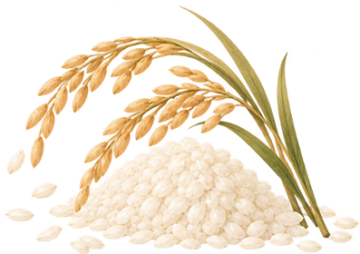
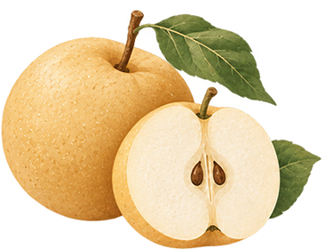
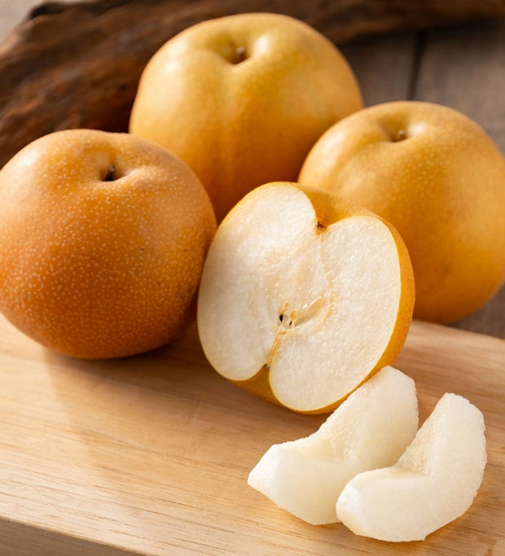
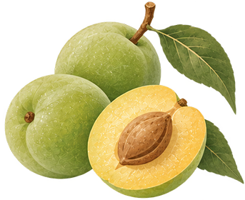
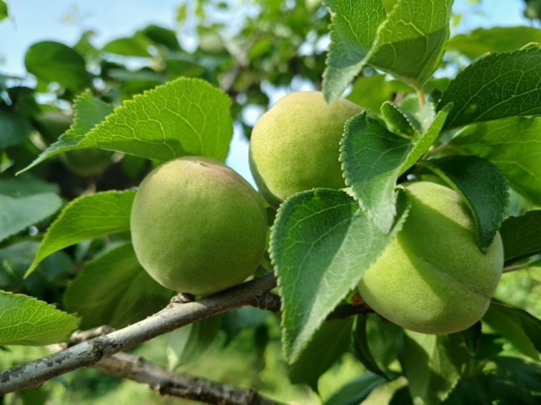
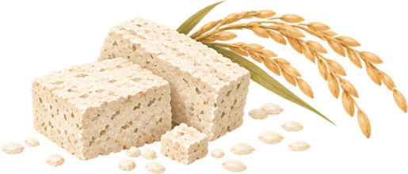
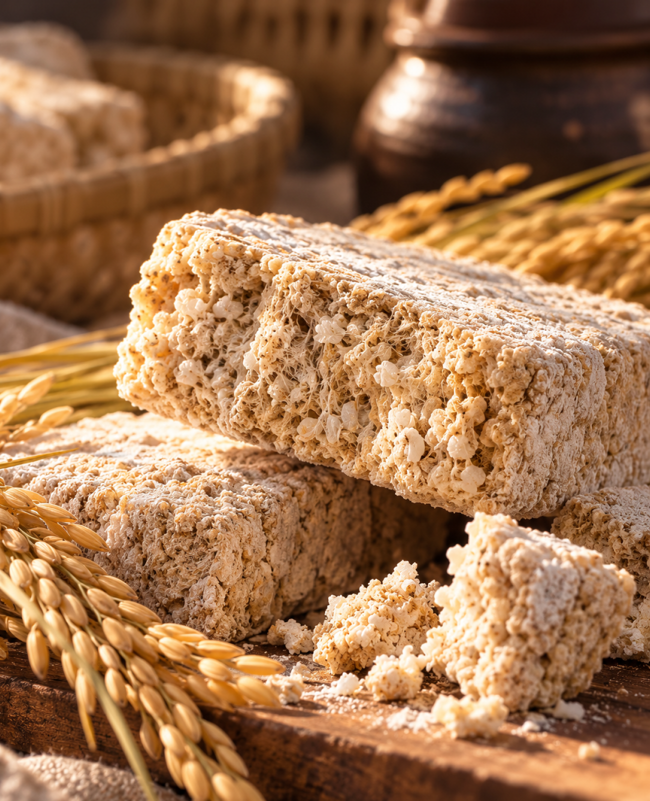

01 / GANGHWA RICE
쌀
술의 바탕이 되는 부드러운 단맛.
정성껏 여문 강화도 쌀은 해온의 중심입니다. 담백한 곡물의 결이 입안을 부드럽게 채웁니다.

술의 바탕이 되는 부드러운 단맛.
정성껏 여문 강화도 쌀은 해온의 중심입니다. 담백한 곡물의 결이 입안을 부드럽게 채웁니다.

맑고 깨끗한 단맛.
배의 투명한 단맛과 섬세한 과실 향이 쌀의 풍미에 산뜻한 표정을 더합니다.


산뜻한 산미와 균형.
매실의 생기 있는 산미가 단맛의 무게를 잡아주어 한 모금을 가볍게 마무리합니다.


잔 끝에 머무는 은은한 꽃향.
튀지 않는 꽃향이 과실과 곡물 사이를 연결하고, 향긋한 여운을 남깁니다.
발효의 깊이, 시간의 풍미.
곡식을 술로 바꾸는 누룩. 발효가 만드는 복합적인 풍미가 해온에 깊이를 더합니다.


THE CRAFT OF HAEON
좋은 술은 서두르지 않습니다.
자연이 준 재료가 시간을 만나, 하나의 맛으로 깊어집니다.
강화도의 땅에서 자란 쌀을 정성껏 씻고 불려, 술의 바탕을 준비합니다.
쪄낸 쌀에 누룩과 물을 더해 발효가 시작됩니다. 쌀의 풍미가 깊어집니다.
배의 맑은 향, 매실의 산미, 국화의 은은한 향이 만나 해온의 균형을 이룹니다.
온도와 변화를 세심히 살피며, 서로 다른 풍미가 어우러질 충분한 시간을 내어줍니다.
발효를 마친 술을 맑게 거르고, 균형을 살펴 한 병의 해온으로 완성합니다.